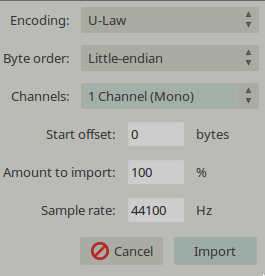
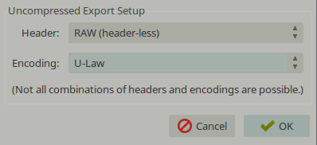
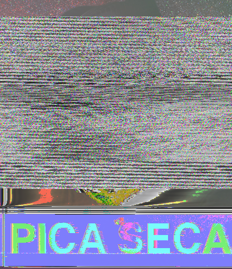

Glitch Art

Já viu essas imagens que parecem ter sido tiradas de TVs CRT com problemas? Ou que a imagem foi corrompida depois de alguém ter lavado o Flash Disk delas e gostaria de saber como fazer as suas? Então, sigam-me os bons!
O processo é bem simples, não tem nada de segredo usando programas obscuros de edição de imagem nem nada, tudo o que você irá precisar é do Audacity e do GIMP [ou qualquer outro editor de imagens que possa transformar imagens em .bmp].
Depois de baixar e instalar tudo [lembrando mais uma vez que dá para usar até o MS Paint para transformar as imagens] é só escolher aquela imagem transante que você quer deixar diferente, no nosso exemplo usaremos a seguinte:
Transforme ela em .bmp, que é só abrir o formato original dela e salvar em .bmp, que é o formato que o Audacity lida melhor com a imagem.
Agora vem um ponto importante, que é importar corretamente a imagem para o Audacity, que é um programa de edição de áudio, mas aqui o usaremos para editar os dados da imagem sem quebrar ela.
Para importar, abra o Audacity, vá em File > Import > Raw data e escolha a imagem que você converteu. Depois que você selecionar a imagem, vai abrir uma janelinha com os dados, siga a imagem a baixo para o que eu uso para deixar tudo legalzão.

Caso você já tenha usado o Audacity alguma vez, vai notar que parece uma música quando foi importada, você pode até ouvir, mas acho que não fará muito sentindo os sons.
Agora vem a sua vez de deixar a imagem no estilo, para deixar mudar os dados e deixar ela com a aquela cara é só você ir selecionando faixas da música e ir colocando efeitos, não precisa nem ficar olhando se está bom ou não, apenas siga o seu coração. O único cuidado que você tem que ter enquanto está fazendo é para não alterar os dados da imagem, que podem estar bem no começo ou no final do arquivo, não tente ficar alterando eles, podem gerar resultados não esperados, como o da imagem não ser lida pelos programas.
É uma recomendação instalar os plugins de efeitos para poder fazer ainda mais coisas.
E para salvar, vá em File > Export Audio e coloque na opção de Other uncompressed files e, clique nas opções, deixe a caixinha conforme a imagem abaixo e, no nome, coloque o .bmp no final para que possa usar como imagem.

Se ainda quiser continuar colocando efeitos na imagem, nada pode te parar agora.
Siga o seu coração e faça o que achar melhor. Quando mais você tentar, maior será o seu conhecimento sobre os filtros o que eles podem fazer na imagem, isso daqui funciona que nem qualquer outro programa de edição de imagem, mas não são os seus olhos que te guiam e sim o seu coração.
Esse foi o resultado que eu tive, eu não sou bom em seguir o meu coração, ainda.

Esperam que tenham gostado do desse tutorial, foi o primeiro que eu fiz aqui. Se alguém quiser que eu escreva mais alguma coisa assim que eu saiba fazer, é só me contatar que eu dou um jeito e faço uma parada maneira para vocês.
Postado em 29/12/2014.